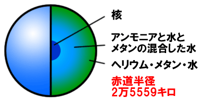
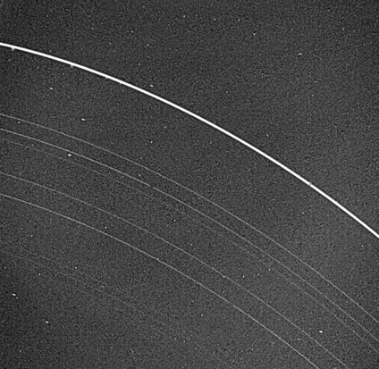

天王星の特徴
はじめて望遠鏡をつかって観測された惑星。天王星は、ほかの惑星のなかで3番目に大きく、木星や土星と同じガス惑星である。成分の多くは水素、残りはヘリウムとメタンになっている。それから内部には、水とメタン、アンモニアの氷があって、中心には岩石の核があると言われている。メタンの雲が赤い光を吸収してしまうので、天王星は青く見えている。
天王星は公転軸に対して自転軸が98度も傾いている。過去に大きな天体が天王星に衝突し、その影響で自転軸が傾いてしまったのではないかとも考えられている。
偶然発見された惑星
天王星は1781年、イギリスの天文学者ウィリアム・ハーシェルによって発見された。彼が望遠鏡で全天の星を観測しているとき、ある星が他の恒星と違って円盤状に見えることに気づき、偶然、発見したのだ。
彼は当初、それを彗星と考えていたようですが、その後の観測によって軌道が求まり、惑星であることがわかった。
星食の観測から発見された環
天王星には11本の環が確認されている。そのどれもが細く非常に暗いため、普通の望遠鏡で直接観測することは困難。初めて環の存在が明らかになったのは1977年、天王星が背後の恒星を隠す「天王星による恒星食」が観測されたときのこと。このとき、天王星の本体が星を隠す前後にも、恒星の光が何かにさえぎられて減光する様子が観測された。その後の分析で、この減光が環によるものだと明らかになった。環を初めて直接観測したのは惑星探査機「ボイジャー2号」が天王星に接近したときのこと。現在では、地上の望遠鏡の大型化や宇宙望遠鏡の開発などによって、天王星の環が直接撮影できるようになった。